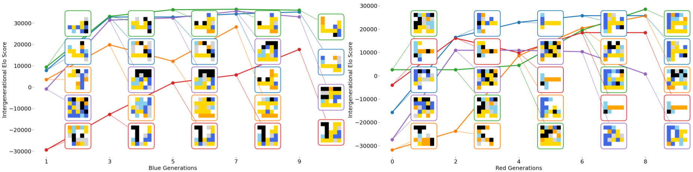

Introduction
Evolving a set of diverse, high-quality solutions that optimize a fitness function while covering a behavior space is known as Quality-Diversity (QD) [2] (or Illumination). It has been successfully applied in multiple domains: robotics [3], video games [4], chemical synthesis [5], and aeronautics [6].
QD can be used to illuminate adversarial problems, for which it can be critical to identify all possible attack strategies, for example, to evaluate a system's current safety and defend accordingly. Examples of applications include: video games for automatic balancing of competitive games [7, 8], generalization evaluation of machine learning models [9, 10], and red teaming [11], i.e., finding adversarial prompts that generate harmful content [12, 13, 14, 15]. Those works illuminate only one side of the adversarial problem while fixing the other, thereby providing only partial illumination against the set of opposing problems picked by the experimenter.
Evolving both sides follows the artificial life goal of creating an open-ended evolutionary process through adversarial coevolution [16, 17]. For example, the POET algorithm [18, 19] coevolves bipedal walkers' policies and environments to create an automatic curriculum toward more robust policies; [20] coevolve Generative Adversarial Networks (GANs) to improve their performance using QD; and [21] coevolve Python scripts in a pursuer and evader game. A limitation of those works is that they are domain-specific.
More recently, Digital Red Queen (DRQ) [22] is a self-play algorithm that leverages LLMs to evolve assembly scripts that compete for survival in a memory-bound virtual machine. DRQ sequentially evolves a solution that competes against all previous elite solutions, leveraging MAP-Elites [23] at each generation to preserve diversity. DRQ applies only to adversarial environments where solutions compete against each other to survive. In contrast, we propose a coevolutionary QD method that applies to any two-opponent adversarial problem.
We present Generational Adversarial MAP-Elites (GAME), a new coevolutionary QD algorithm that illuminates both sides of an adversarial problem by alternating the evolution of solutions on one side that maximize the adversarial fitness against fixed opponents from the other side (see figure above). A second contribution is the use of a Vision Embedding Model (VEM) (we use CLIP [24]) to obtain a domain-agnostic behavior descriptor from videos, without requiring a handcrafted behavior descriptor. To handle the high dimensionality of the embedding space, GAME uses an unstructured archive [25].
This blog post includes two publications: the original GAME paper [26] (the extended version of [27]) and a following study to improve the adversarial quality and diversity of the found solutions [28].
The challenges of adversarial quality diversity

The main challenge of adversarial quality diversity is that, when evaluating two opposing solutions, it is not trivial to determine whether a solution's high fitness is due to its high quality or to the opposing solution's poor quality. As in most interesting domains, it is often easier to sample a poor solution; a traditional QD algorithm would select solutions that performed well against poor ones. A second challenge is that the behavior of one solution also depends on the opposing solution; for example, a defensive strategy in a battle game will only react if the opposing units move close enough.
The current solution to solve these challenges is to freeze one side of the adversarial problem. This is not satisfying as (1) the solutions will overfit the fixed set of opponents, (2) the experimenter needs to know good solutions already, and (3) this prevents the arms-race dynamics often present in adversarial problems.
Our method: Generational Adversarial MAP-Elites (GAME)
Our solution is to coevolve both sides in a sequence of generations. At each generation, GAME selects a set of solutions for one side to serve as fixed opponents, also called tasks, and leverages a multi-task QD algorithm, MTBM-ME [1], to evolve for each opponent a set of diverse solutions that perform well against it. GAME then switches sides and selects solutions from the previous generation to serve as fixed opponents at each generation.
More formally, GAME:
- (a) Initializes a first generation of tasks by randomly sampling Blue solutions.
- (b) Executes MTMB-ME by alternating sides at each generation. (For the reminder of these explanations, we suppose that GAME is evolving Red solutions against Blue tasks.)
- (c) At each iteration, picks one Blue task at random, picks two Red elites from the all archive at random, and applies a variation operator to obtain a Red candidate.
- (d) Evaluates the Red candidate against the Blue task to gather the Red fitness f and the behavior B. (A second contribution of GAME is its ability to use a VEM embedding as a domain-agnostic behavior space that can operate on videos or images. GAME then applies a VEM and concatenates the resulting embeddings to form the behavior descriptor B.)
- (e) Updates the archive: if (1) the behavior B would allow the archive to grow or (2) the fitness f is greater than the fitness of the current elite of the cell corresponding to behavior B.
- (f) Selects a subset of Red elites to form the next generation of Red tasks, after the execution of MTMB-ME for a given budget of evaluations. (Designing a task selection method that drives adversarial coevolution to consistently improve quality and diversity is the subject of our second paper and is presented below.)
- (g) Performs a round robin tournament between the previous Blue tasks and the new Red tasks to evaluates the current generation.
- (h) Bootstraps the next generation of Blue solutions by using the evaluations performed during the tournament.
- go back to step (b).
Experiments
Battle game: Parabellum
Parabellum [29] is a battle game research environment implemented in JAX [30] for fast parallelization. Two sides, Blue and Red, aim to eliminate the other. At each time step, each unit can either move, stand, attack an enemy in reach, or heal an ally in reach, given its local observation (a unit can only see other units within its sight range). There are five unit types with different health, speed, attack range, and attack damage, each shown in a different color. In our experiment, each side comprises 32 units of each type (i.e., 160 units in total).
Parabellum uses behavior trees (BTs) [31] to control each unit, where all the units of one side share the same BT. Their tree structure allows the use of genetic variation operators and also makes them intuitive to design by hand and interpretable. We define a set of atomic actions and conditions in JAX that the BT combines to create a policy, which we convert into an array representation for easy vectorized evaluation, at the cost of limiting the BT's size.
In Parabellum, we compare GAME to ablations and a variant with a multi-objective fitness that secondarily minimizes the size of the BT. The main takeaways are:
- All components of GAME are necessary to achieve the highest quality and diversity.
- Minimizing the BT size prunes neutral mutations that appear to be essential stepping stones for high-performing solutions. This supports the neutral theory of molecular evolution [32], which posits that most variation at the molecular level is neutral yet can drive the evolution of complex organisms in nature.
- Bootstrapping each generation using solutions from previous ones accelerates the search compared to starting from scratch at each generation. However, the only variant that consistently generates new solutions across all generations is the one without bootstrapping. This phenomenon is related to extinction events [33] and warrants further investigation, as it currently does not yield the best diversity or quality.
- The use of BTs with a fixed set of atomics limits the open-endedness of the search space. An interesting future direction is to use end-to-end neural networks that map observations to actions, potentially employing neuroevolution [34], to move toward a more open-ended search space.
Soft-robot: Wrestling
Wrestling is a custom EvoGym [35] environment in which two 2D soft robots fight to be the closest to the center of the arena. While the coevolution of morphology and its control is an interesting and challenging topic [36, 35, 37, 38], it is beyond the scope of this work to explore the intersection of adversarial coevolution and body–brain coevolution. We instead focus on the adversarial coevolution of morphology in an adversarial environment, where the morphology passively provides actuation. We follow [39, 40] and define passive and active voxels that change volume according to a sine-wave pattern. GAME evolves 5x5 robots with the constraints that all non-empty voxels are connected and that there is at least one actuated voxel.
We define the fitness function as the ratio of timesteps where the robot was closest to the center. Interestingly, this zero-sum fitness makes the application of classic QD methods even more difficult, as a nearly static morphology can achieve perfect fitness if it is only slightly closer to the center, i.e., fitness is purely relative. As a behavior space, we also use the same VEM, i.e., CLIP [24], on 5 subframes of the confrontation video.
We evaluate GAME against a one-sided baseline (i.e., we use MTMB-ME against a fixed set of random opponents for the same total number of evaluations), with the following takeaways:
- The one-sided baseline obtains a slightly greater coverage of behaviors. This is mainly because it doesn't have to restart its search at each generation, unlike GAME, which, even with the bootstrap, still has to allocate some evaluation to repopulate the archive.
- GAME's morphologies nearly always beat the morphologies of the one-sided baseline, which overfit the fixed set of random opponents. When checking the average velocity of the morphologies, GAME finds morphologies with significantly higher velocities than the one-sided baseline, which could be satisfied with just slightly higher velocities than random morphologies. This validates the need for coevolution in adversarial problems.

Additionally, we took all elites from a single execution of GAME across generations, clustered them by morphology, and computed their relative performance using an ELO score in a round-robin tournament. This tells us that the search space is not open-ended, in the sense that GAME discovers all the morphological species in the first generation. Nonetheless, at each generation, GAME improves the performance of each species. Future work should focus on integrating body–brain coevolution [36, 35, 37, 38] into GAME to enable a truly open-ended search space for artificial creatures.
Deck building: Hearthstopper
To further evaluate GAME's generality, this time without VEM, we apply it to a deck-building and battle card game. In addition, we compare its ability to find diverse and high-quality decks against a one-sided illumination QD ablation, as in [7]. We use a Python simulator of the Hearthstone digital collectible and battle card game [41], Hearthbreaker [42]. Hearthstone is a two-phase card game. In the first phase, deck building, the player chooses a class and creates a deck of 30 cards. In the second phase, the deck battle, the player battles against an opponent. The goal is to set the opponent's life from 30 to 0. Similar to [7], we consider only the deck-building phase and use Hearthbreaker's Trade Agent heuristic to play the deck. This heuristic is a greedy policy that maximizes the opponent's minion loss and then maximizes damage to their health.
We compare with a one-sided illumination (i.e., MAP-Elites [23]) that evolves a diversity of decks against only the starting deck of the opposing side. In contrast, GAME coevolves a diversity of solutions for both sides. Comparing against the starting decks: GAME's coverage is significantly worse than the one-sided method. The reason is that GAME splits the archive across multiple tasks, leaving few cells for diversity, whereas the one-sided method can allocate all its cells to diversity. This becomes apparent in this case study because we use a 2D behavior space. It is thus much easier to cover the entire space of reachable behaviors. This highlights a limitation of GAME: the independence of diversity across tasks, which leads to the storage of elites with similar behaviors across tasks, thereby reducing the archive's overall diversity. Still, even though GAME's elites are not evolved against the starting decks, they show similar performance against them.
Comparing the methods against each other: GAME finds significantly better decks for 7 out of 10 comparisons and non-significantly better decks for the remaining three. A simple reason is that the one-sided method's decks are only evolved to compete against the starting deck. In contrast, GAME coevolves a diversity of decks that prevents overfitting to a single one.
Task selection mechanism

The task selection mechanism drives the coevolutionary process and should select tasks that present a greater diversity of challenges at each generation to broaden the illumination. The original GAME [26] uses a behavioral criterion to select tasks, which is not satisfying because it disregards the adversarial aspect.
In our second work [28], we propose two new task selection methods, Ranking and Pareto, that leverage a tournament between the current elites and tasks, and compare them against the original method, Behavior, and a random baseline, Random.
- Behavior: (a.1) aggregates all elites using behavior collected from MTMB-ME's evaluations, (a.2) recomputes an archive as if they were from the same behavior space using $N_{task}$ cells, and (a.3) selects the elite of each cell, ignoring that they were evaluated on different tasks.
- Random: simply selects the tasks as a random subset of the elites.
- Ranking: (b.1) performs a tournament between all the elites and the previous tasks to (b.2) collect the fitness vector, (c.1) computes the ranking vector of the different tasks for each elite, (c.2) normalizes this ranking, (c.3) uses this as an adversarial behavior descriptor to cluster all the elites into cells, and (c.4) selects the elite of each cell, using the average fitness over all tasks as quality criteria. Note that all the elites have been evaluated against all tasks, so the comparison is fairer than with Behavior. Finally, for bootstrapping, only the evaluations from the selected elites are used, meaning that most of the tournament's evaluations are not repurposed.
- Pareto: (b.1) performs a tournament between all the elites and the previous tasks to (b.2) collect the fitness vector, (d.1) uses NSGA-III [43] to select $N_{task}$ elites from the successive Pareto fronts of the tournament's fitness vectors, and (d.2) performs the bootstrapping.
Pong
Cat-and-mouse
Pursuers-and-evaders
We compare the variants using metrics of adversarial quality and diversity across three adversarial problems: Pong, Cat-and-mouse, and Pursuers-and-evaders. We conclude that both tournament-informed task selection methods outperform the original method and the random baseline, and that Ranking is slightly but significantly better than Pareto. This opens the way for more performant adversarial QD, while future work should focus on proposing more sample-efficient methods that estimate the costly tournament ranking.
What Now?
Adversarial QD, what for?
Adversarial QD has multiple applications:
- Find all high-quality solutions: for example, to automatically estimate the balance of an adversarial game, a costly task that still relies on human play testing and expert knowledge.
- Evaluate the safety of a system: for example, in Red teaming for finding prompt attacks against large language models, or for automatically finding bugs in a game.
- Find counter-strategies: in a defense scenario, it can be useful to know all the possible strategies of the opponent and have access to a database of all the possible counter-strategies.
- Find a robust solution: by coevolving both sides, adversarial QD avoids overfitting to a fixed set of opponents.
- Study open-ended systems: adversarial QD can help artificial life research create an open-ended process by continually promoting a virtuous circle or an arms race.
For each of those end-goals, the practitioner needs a different metric, which we also discuss in our second paper [28].
Open-ended coevolution
The main limitation of these two works is the non-open-endedness of the adversarial domains. We're enthusiastic about applying GAME to more open-ended problems to understand the emergence of artificial open-endedness better.
Playing with GAME
If, like us, you want to play with GAME for your own adversarial problems, we recommend looking at the examples in our second paper Repo. We are also open to collaboration and will be at Gecco '26 in San José, Costa Rica, July 13 - 17, 2026, to present our second paper.
Appendix
Acknowledgements
Funded by the armasuisse S+T project F00-007.
BibTeX citations
Main paper for GAME: PDF, Repo, and citation:
@ARTICLE{11494045,
author={Anne, Timothée and Syrkis, Noah and Elhosni, Meriem and Turati, Florian and Legendre, Franck and Jaquier, Alain and Risi, Sebastian},
journal={IEEE Transactions on Evolutionary Computation},
title={Adversarial Coevolutionary Illumination with Generational Adversarial MAP-Elites},
year={2026},
volume={},
number={},
pages={1-1},
keywords={Video games; Quality-Diversity; Adversarial Coevolution},
doi={10.1109/TEVC.2026.3686956}
}
Second citation for the study of the task selection mechanism and the evaluations on Pong, Cat-and-mouse, and Pursuers-and-evaders: PDF, Repo, and citation:
@misc{anne2026tournamentinformedadversarialquality,
title={Tournament Informed Adversarial Quality Diversity},
author={Timothée Anne and Noah Syrkis and Meriem Elhosni and Florian Turati and Alexandre Manai and Franck Legendre and Alain Jaquier and Sebastian Risi},
year={2026},
eprint={2601.19562},
archivePrefix={arXiv},
primaryClass={cs.NE},
url={https://arxiv.org/abs/2601.19562},
note={Accepted at GECCO '26, San José, Costa Rica}
}
References